A light, airy Clarksville studio for manicures, pedicures, SNS dip, full sets and nail art. Gentle hands, polish that lasts, and walk-ins welcome seven days a week.
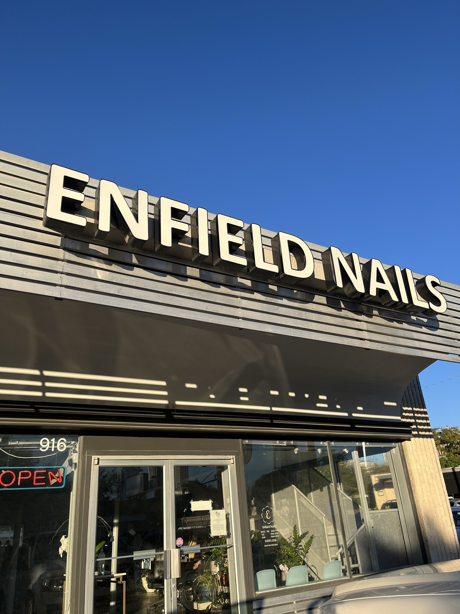
Enfield Nails is the family-owned studio under the white channel-letter sign at 916 W 12th St, just east of Lamar and two doors down from The Tavern. Come in for a quick manicure after work, a pedicure with a massage, SNS dip that lasts, or a full set with art you have been saving on your phone.
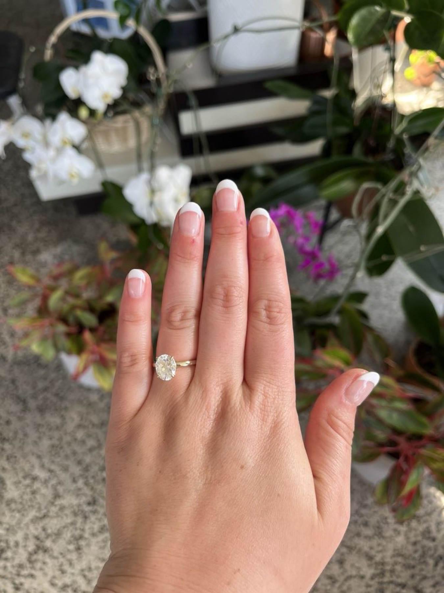
Classic, deluxe, French and shellac or gel manicures, shaped and finished with care.
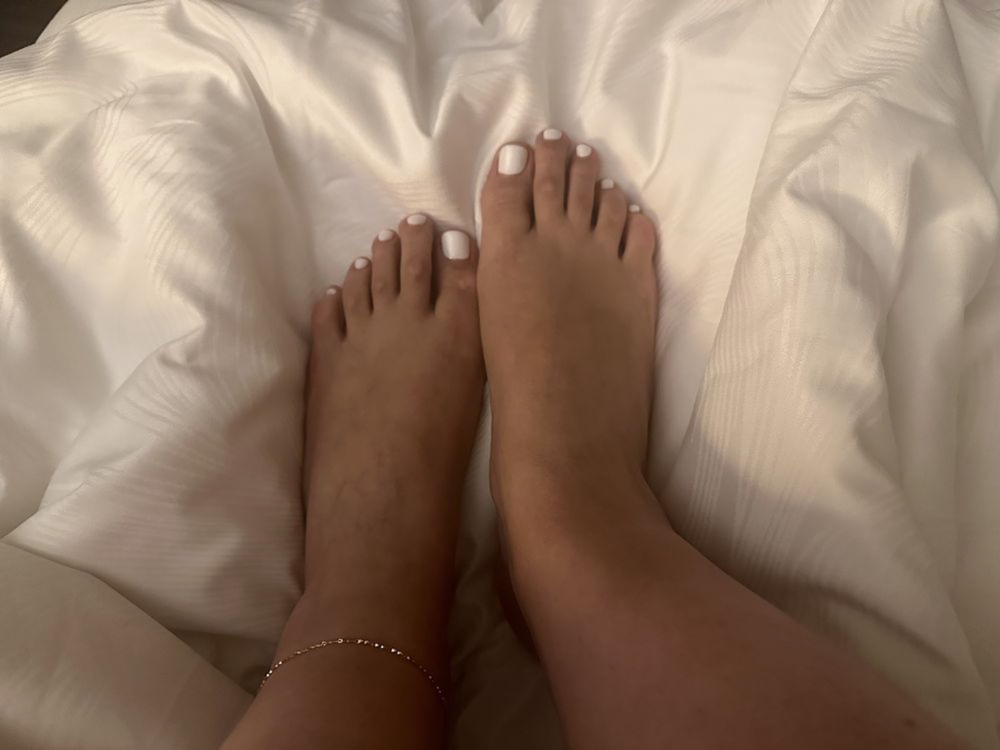
Relaxing pedicures with a massage that out-of-town guests and regulars rave about.
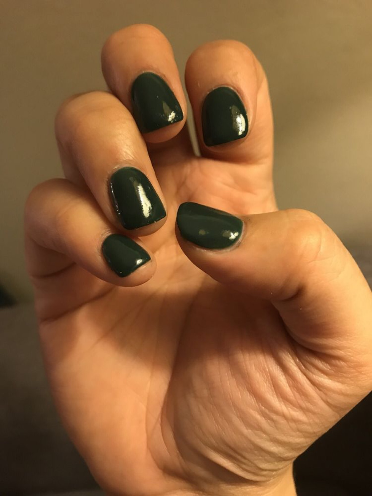
SNS dip powder and gel color that holds up for weeks. Regulars ask for Katie and Bong by name.
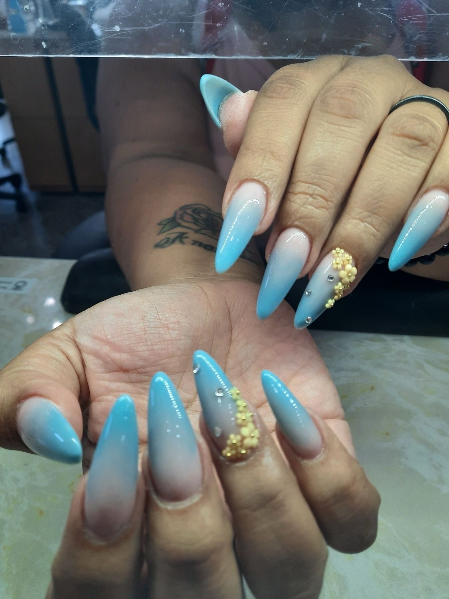
Full sets, fills and extensions in the shape and length you want.
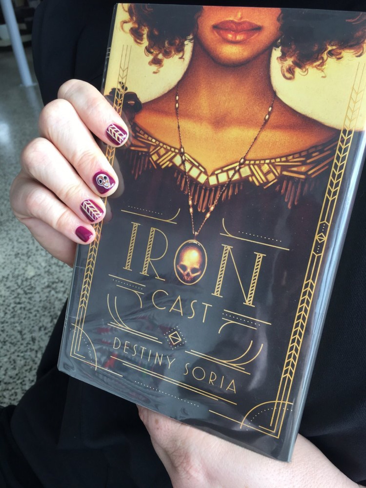
Ombre, chrome, holiday sets and hand-painted designs, right down to the cover of the book you are reading.
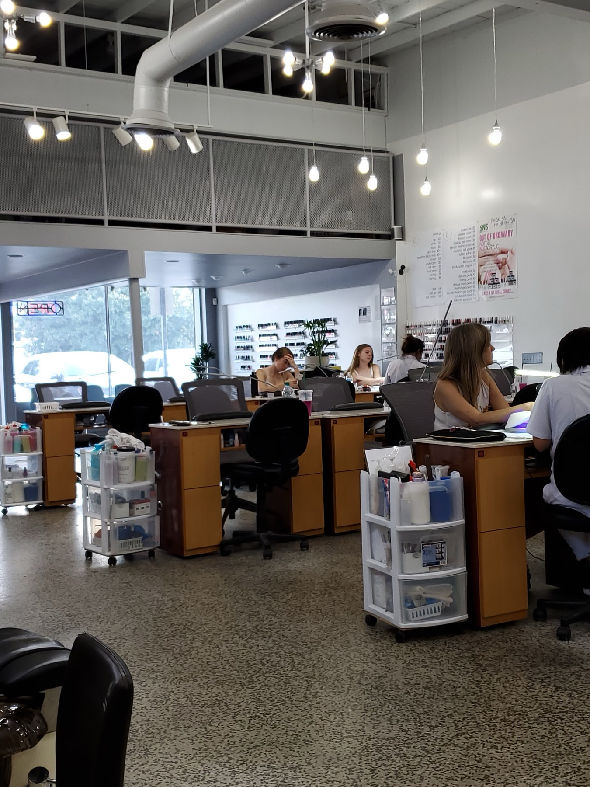
Quick waxing and eyebrow shaping while you are here. Ask at the front desk for what is on today.
I was staying the DoubleTree and needed a pedicure, so very happy I came here! The massage was wonderful, my feet feel amazing and the polish was on point. Definitely recommend.
One of the best nails salon. Excellent customer understanding the need and delivering quality service. Got a deluxe pedicure - felt so relaxing and nails looks amazing. They are so good to interact with and lovely to talk to.
Came here after work with a big group (we had an appointment) and the nail techs were all so kind and very organized! I LOVE my nails, she did a great job. I've gone to a lot of other nail places and they usually cut me when they trim my cuticles, but she was very gentle and careful and I did not get cut. I'm so happy with my nails and will definitely be back!
Best nail salon I've been to in Austin!! I went in for my wedding nails & they did not disappoint. Large selection of colors, no wait, clean salon, reasonably priced and very friendly. They tested out multiple colors for me on my nails before beginning so I could see the exact look outside of the bottle.
Was able to get a same day appt on a weds AM. My manicure was great and reasonably priced! My technician took the time to really inspect each nail and make sure they were dry before leaving. The hand massage was amazing.
Excellent service. My friends and I loved the work they did. It lasted 3 weeks, but it could have lasted longer if it weren't for my nail growth. 10/10. Update: I came back to this place and they did a beautiful job! Now I'm ready to celebrate Mexican Independence Day. Thanks girls!
Manicures and pedicures for a male have been what I wanted since I could not reach my toes. Been going to them for as long as they have been open. Followed them from Tarrytown nails. Great service. Great people.
I have been coming to Enfield Nails for 4+ years (pre Covid). This place is clean, prices are normal, and has a great selection of colors. There are an above average number of stations open at all times. The check in process is easy and quick, and I rarely have to wait. I always get beautiful results here.
I've been coming here since I moved to Austin 3 years ago and it never fails!! I love Abby and request her every time. They're efficient, friendly, and so good at what they do!
Annie is my favorite technician. I get shellac manicures. They always last a long time. She is very careful around the cuticles. My nails always look great!
T is AMAZING! Everything is done with care, and patience. No where is better. Would recommend to all my friends.
Got engaged this morning and went to get my nails done after for photos. They were very nice and the nails are beautiful. They also fixed 2 of my broken nails and they feel very sturdy.
I was staying the DoubleTree and needed a pedicure, so very happy I came here! The massage was wonderful, my feet feel amazing and the polish was on point. Definitely recommend.
One of the best nails salon. Excellent customer understanding the need and delivering quality service. Got a deluxe pedicure - felt so relaxing and nails looks amazing. They are so good to interact with and lovely to talk to.
Came here after work with a big group (we had an appointment) and the nail techs were all so kind and very organized! I LOVE my nails, she did a great job. I've gone to a lot of other nail places and they usually cut me when they trim my cuticles, but she was very gentle and careful and I did not get cut. I'm so happy with my nails and will definitely be back!
Best nail salon I've been to in Austin!! I went in for my wedding nails & they did not disappoint. Large selection of colors, no wait, clean salon, reasonably priced and very friendly. They tested out multiple colors for me on my nails before beginning so I could see the exact look outside of the bottle.
Was able to get a same day appt on a weds AM. My manicure was great and reasonably priced! My technician took the time to really inspect each nail and make sure they were dry before leaving. The hand massage was amazing.
Excellent service. My friends and I loved the work they did. It lasted 3 weeks, but it could have lasted longer if it weren't for my nail growth. 10/10. Update: I came back to this place and they did a beautiful job! Now I'm ready to celebrate Mexican Independence Day. Thanks girls!
Manicures and pedicures for a male have been what I wanted since I could not reach my toes. Been going to them for as long as they have been open. Followed them from Tarrytown nails. Great service. Great people.
I have been coming to Enfield Nails for 4+ years (pre Covid). This place is clean, prices are normal, and has a great selection of colors. There are an above average number of stations open at all times. The check in process is easy and quick, and I rarely have to wait. I always get beautiful results here.
I've been coming here since I moved to Austin 3 years ago and it never fails!! I love Abby and request her every time. They're efficient, friendly, and so good at what they do!
Annie is my favorite technician. I get shellac manicures. They always last a long time. She is very careful around the cuticles. My nails always look great!
T is AMAZING! Everything is done with care, and patience. No where is better. Would recommend to all my friends.
Got engaged this morning and went to get my nails done after for photos. They were very nice and the nails are beautiful. They also fixed 2 of my broken nails and they feel very sturdy.
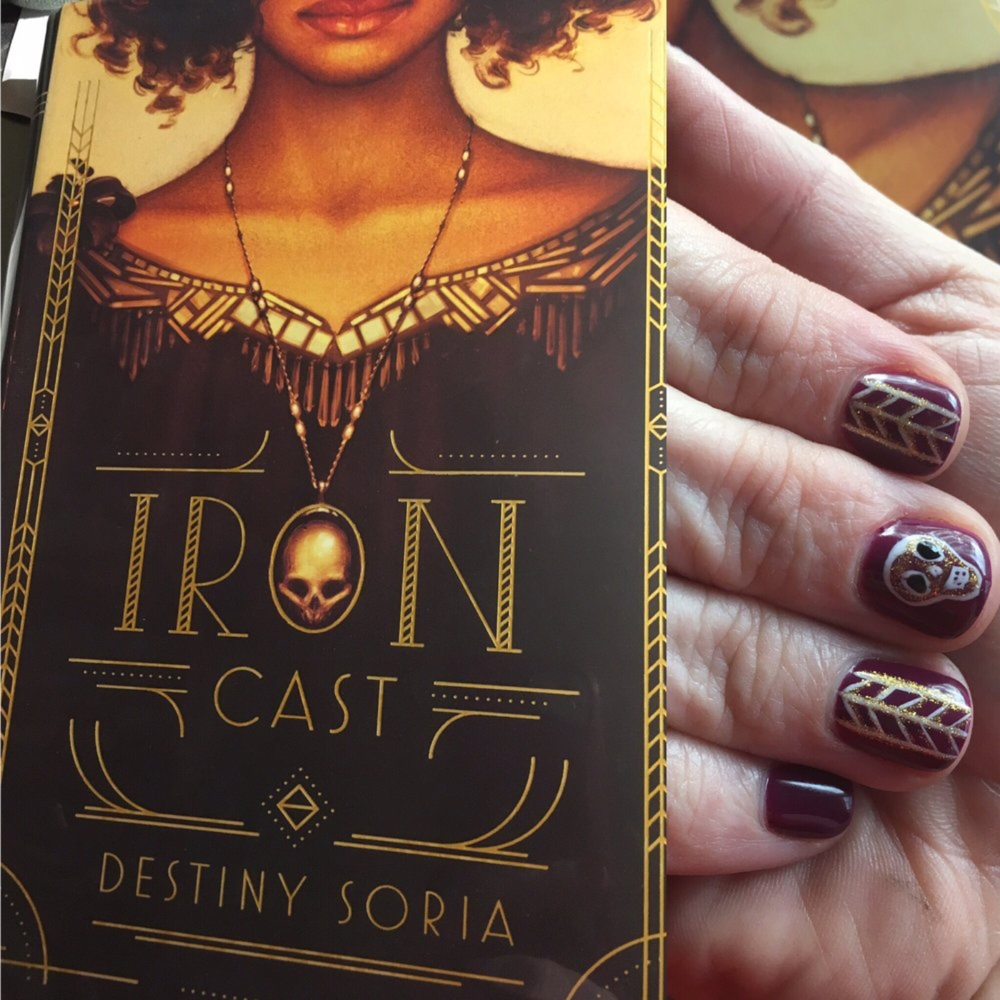
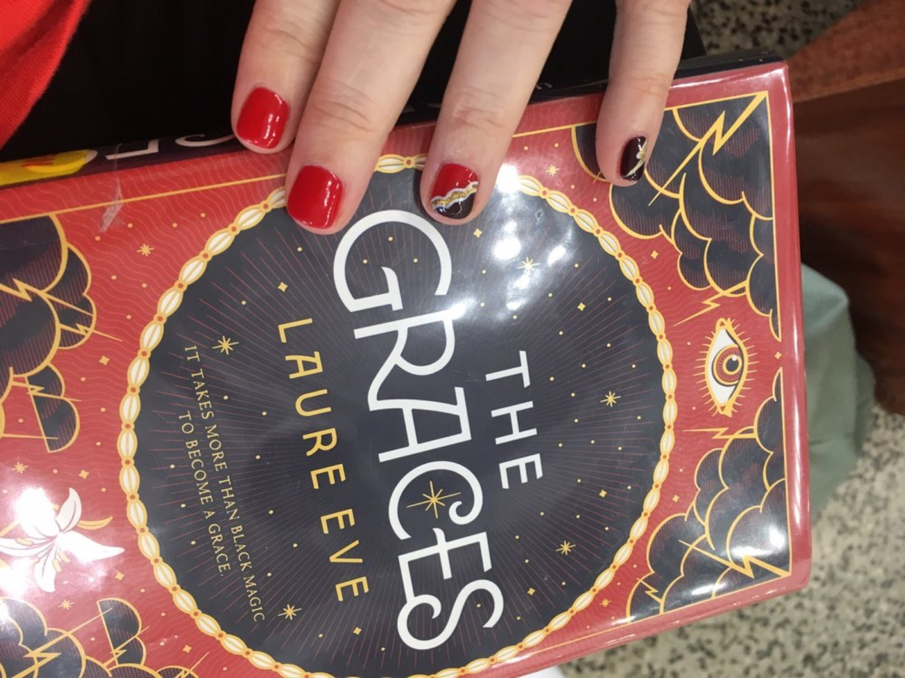
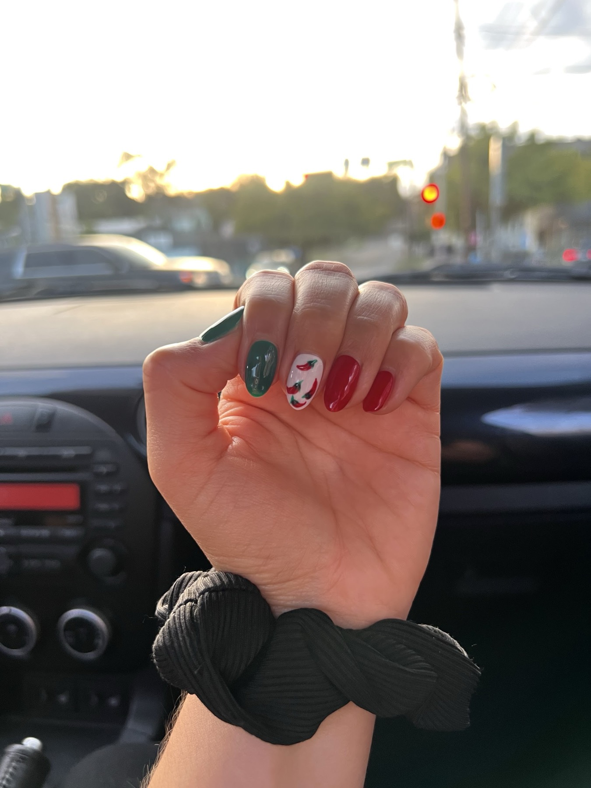
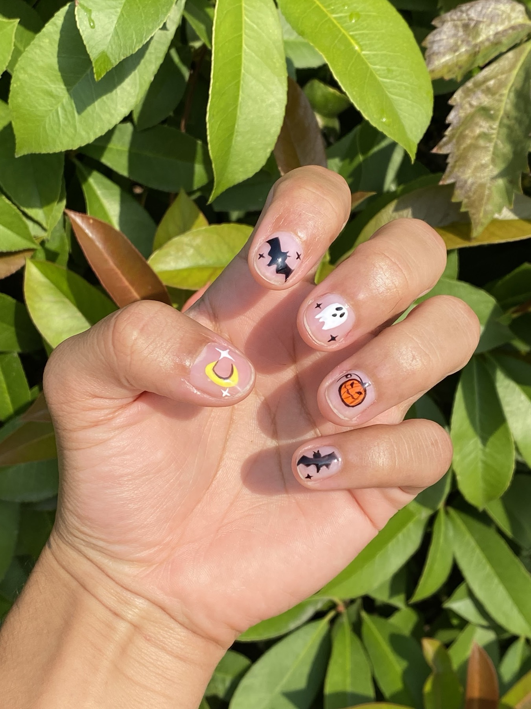
Two minutes online. Add inspiration photos if you have them.
Choose a time that works for you. Enfield confirms by text.
We talk through the look before we start.
No appointment needed. Walk in under the sign, or call ahead to bring the whole group.
The full menu is posted on the wall inside. Here is what the team does every day; ask at the front desk or call (512) 551-3226 for current prices.